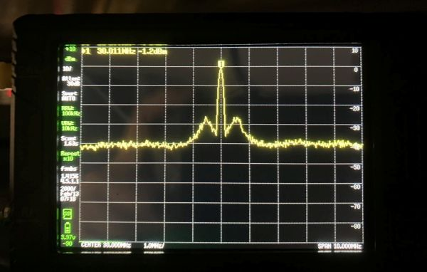
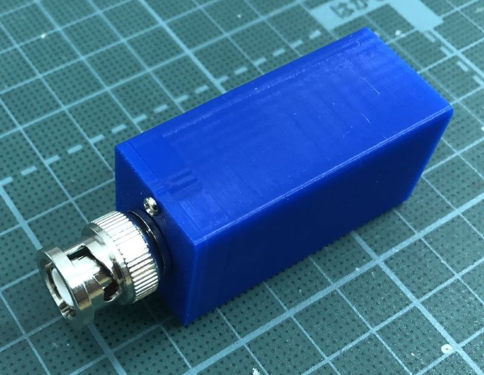
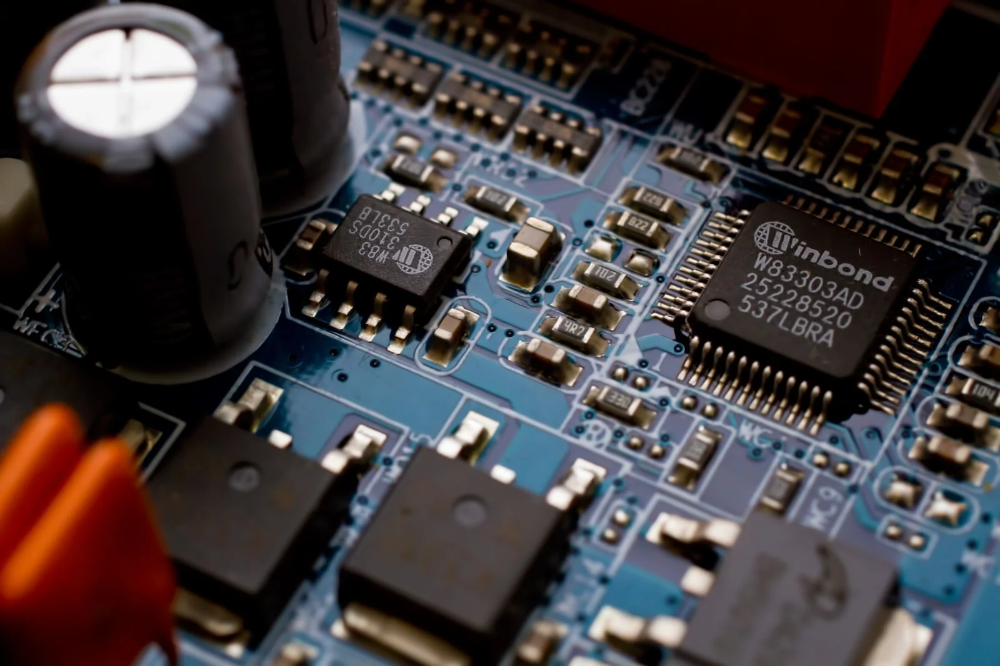
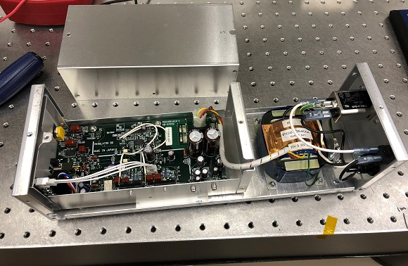

Home
About
Works
Works
Categories
All
(21)
FPGA
(1)
GitHub
(1)
Music
(7)
Original song
(7)
Python
(2)
Quarto
(2)
ウェブサイト
(2)
マイコン
(3)
レーザー
(3)
低雑音電源
(1)
光共振器
(1)
実験装置
(1)
温度制御
(1)
電子回路
(9)

tinySA UltraのPC制御
電子回路
少し前に話題になった手のひらサイズの格安スペアナtinySA
1
。 懇意にしているメーカーの方が使っているのを見せていただき、自分も欲しくなって手に入れました。
2025-01-25

小型マイコンボードで作るシンプルなデジタイザ
マイコン
電子回路
BNC入力、USB-C出力の簡易デジタイザです。アナログの電圧信号をPCに取り込んでモニタリングするのに使えます。
2024-08-18
Quartoでウェブサイトを作りQuarto Pubで公開する
ウェブサイト
Quarto
以前、簡単にウェブサイトを作成・公開・維持する方法として、QuartoとGitHub Pagesを使った方法を紹介しました。
2024-07-15
CircuitPythonを使えるようにする（KB2040）
マイコン
Python
CircuitPythonを使ってRP2040マイコンボードを動かします。とりあえず、手元にあるKB2040で説明します。
2024-07-08
Pythonの環境構築
Python
Pythonを始めた当初はAnacondaを使って環境構築していましたが、更新が上手くいかなくなったりとよく分からない状態になっていたので、python.org経由の標準的な方法で環境を構築しなおしました。以下、その備忘録です。
2024-06-29

FPGA (MachXO2) の書き込み
電子回路
FPGA
Lattice SemiconductorのFPGA
LCMXO2-256HC
（MachXO2シリーズ）は、以下のような利点があります。
2024-04-28
You Go, We Go
Music
Original song
某研究所のテーマソングのようなイメージで作成。異なる研究分野の融合によって、ともに新しい未来を創造していこうという歌です。
2024-04-12
PC制御式LDドライバに物理インターフェイスを付けてみた
電子回路
レーザー
マイコン
将来的なLDのリモート制御のために、PCで制御するタイプのLDドライバを買ってみました。が、実験室で使うのにいちいちPCと接続しないといけないのは大変なので、ケースに入れてフロントパネルから簡単な操作ができるようにしました。
2024-03-24
RS232C-USB変換
実験装置
RS232CをUSBに変換し、RS232C対応の装置とPCの間で通信するための手順のメモです。PC側では変換ケーブル（変換用IC）が仮装COMポートとして認識されます。
2024-03-17
Quartoでウェブサイトを作ってGitHubで公開する
ウェブサイト
Quarto
GitHub
簡単にウェブサイトを作成・公開・維持する方法はないかと模索していたところ、QuartoとGitHub Pagesを使った方法にたどり着きました。これなら楽そうと思い、10年くらい手つかずだった個人ウェブサイトを刷新しました。ここでは、備忘録も兼ねて手順を簡単に解説します。
2024-03-10
共振器コントローラー
電子回路
レーザー
光共振器
ファブリペロー共振器コントローラーです。 共振器共鳴周波数をレーザー周波数に安定化するのに使えます。 オートリロック機能付きで、共振器周りでうるさい作業をしてもロックが外れません。
2024-03-02
温度コントローラー
電子回路
温度制御
温度コントローラーを作ってみました。 普段は製品を購入していますが、一度自作してみようということで。自作経験があれば、予算不足に陥ったときも怖くない？ペルチェとサーミスタで制御する仕様です。
2024-03-01

低雑音アンプ用の電源の中身を見てみる
電子回路
低雑音電源
某メーカーの低雑音アンプ用電源の中を覗いてみました。
2024-02-27
低速受光器
電子回路
レーザー
CWレーザー分光やレーザーパワーモニターなどに使用する低速受光器です。
2024-02-23
三角波発振器（掃引回路）
電子回路
三角波と矩形波を出力する低速発振回路です。 三角波は掃引信号として、矩形波はそのトリガー信号として、さまざまな装置で便利に使用できます。
2024-02-23
Colour of the Universe
Music
Original song
天体が放つ光のドップラーシフトを利用した天体視線速度測定は、太陽型恒星の周りを公転する系外惑星が初めて発見された際に用いられた手法である。さらに精度を高めることで、地球型系外惑星発見、宇宙加速膨張の直接的実証、基礎物理定数の恒常性検証が可能になると期待されている。
2023-06-03
ダンス万能説 -Dance Versatileness-
Music
Original song
踊るときにあれこれ考えるのは大きなミス。感じることが大切だよ。
2011-12-19
いつもの場所
Music
Original song
2011年、東日本大震災の直後に作った曲。
2011-04-20
Goodbye to My Days
Music
Original song
修士時代、田舎に帰ってしまった同期の友人の心情を想像して作った曲。
2010-03-02
Regrets
Music
Original song
「やらないで後悔するより、やって後悔したほうがいいって言うよね？」という想いを鏡音リンに歌ってもらいました。
2009-08-04
LIMIT BREAKER!!
Music
Original song
「なんでやらない！？」「どうして限界を決める！？」「もっと熱くなれよ！！」そんなな想いを曲にしました。
2009-04-21
No matching items